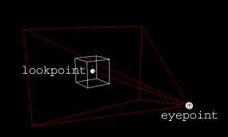
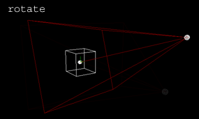
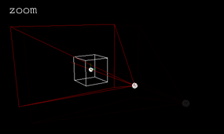
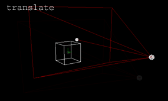

3-D Navigation
The three application modes (module, object and
play mode) and the file browser simulate a 3 dimensional
space. You navigate this spaces in the same way.
Imagine, you are steering a flying camera through this spaces.
A camera has a position, an orientation and a field of
view (fov). The position of the camera is also called it's eyepoint,
the orientation is defined by the vector from the eyepoint to
the lookpoint and the up vector.

There are three possible navigation modes to change the position
and orientation of the camera:
Rotate

While rotating, you change the position and orientation of the camera
simultaneously while keeping the look point constant.
Subjective effect: rotating the space around the look point.
Zoom

When zooming, you keep the lookpoint and orientation, while
changing the distance from the eyepoint to the lookpoint.
Subjective effect: the objects in space get bigger or smaller.
Translate

A translation keeps the orientation but moves both, the lookpoint
and the eyepoint in the same direction.
Subjective effect: moving the space horizontally or vertically.
Switching between navigation modes
The default navigation mode is Rotate. Simply click and hold
the mouse button anywhere in empty space and move the mouse.
There exist two ways to switch from Rotate to another mode:
- click and hold one of the navigation buttons labeled 't'
(Translate) or 'z' (Zoom) on the left side
of the screen and move the mouse.
- press and hold the
 (Translate) or
(Translate) or  (Zoom) key and click and hold the mouse button somewhere
in empty space and move the mouse.
(Zoom) key and click and hold the mouse button somewhere
in empty space and move the mouse.
When you release the mouse button or modifier key, kodisein will automatically
switch back to Rotate mode.
Shift modifier
When you navigate while holding down the SHIFT key, the following
happens:
In Rotate (Translate) mode you will rotate around (translate
along) the z-axis instead of the x- and y-axis.
In Zoom mode you will change the fov instead of the distance
from eyepoint to lookpoint.
Focus & zoom on objects
If you pick an object and activate the menu item view > projection
> focus on selection (or press it's shortcut 'f'),
the lookpoint will be moved to the center of the object. The same
happens, if you activate view > projection > zoom on
selection (or press 'z') but the camera will zoom on
the object as well.
Free & constrained rotation
kodisein keeps the up vector constant by default. This gives
you a feeling where 'up' and 'down' is.
By activating the menu item view > mode > free rotation,
you can freely orientate the camera but you will loose the 'up'
and 'down' orientation.
Reset
Sometimes you may get 'lost in space'. In this case you simply activate
view > projection > reset which moves the lookpoint
back to the origin and resets the fov and eyepoint
to lookpoint distance as well.
For each mode and project you may define a different reset projection
by activating view > projection > set reset.
>>> Transparency

|